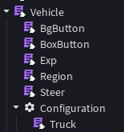

Motores
El vehículo está hecho con HingeConstraints y PrismaticConstraints porque son los que mejor se adaptaron para hacer los motores. Cada llanta tiene su propio motor y están controlados desde el componente Truck.
Roblox Studio · Extra
Gracias a Danfity por el diseño de las llantas.
Este vehículo es un pequeño proyecto que hice para probar mi framework, específicamente los componentes y las extensiones (herencia).

El vehículo está hecho con HingeConstraints y PrismaticConstraints porque son los que mejor se adaptaron para hacer los motores. Cada llanta tiene su propio motor y están controlados desde el componente Truck.
Tiene dos botones al lado del volante: el rojo para abrir la puerta del remolque y el amarillo para remolcar; los dos sistemas están hechos con HingeConstraints igualmente. El volante también se mueve dependiendo de la dirección del vehículo; igualmente usa un HingeConstraint para moverse.
Tiene unas luces encima del vehículo para simular un vehículo de trabajo, al igual que unas luces frontales que siempre están encendidas. Las luces traseras se encienden en rojo si el vehículo está frenando antes de ir marcha atrás, y se encienden en blanco cuando empieza a ir marcha atrás.